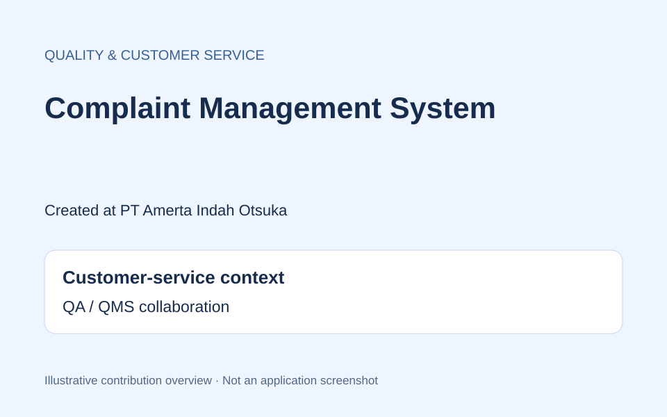

Complaint Management System at PT Amerta Indah Otsuka
I created CMS to support complaint management across Quality Assurance (QA), Customer Service (CS), and Quality Management System (QMS) teams. It brings the handling of a customer concern into a shared application context for the functions involved.
The business need
A complaint involves both the customer-facing concern and the internal quality response. A useful application needs to make that context understandable across teams, so the issue remains connected to the people following it up.
Project focus
- Cross-functional complaint context
The application supports the QA, CS, and QMS functions involved in complaint management.
- A shared business workflow
Complaint information provides a common reference for customer-service and quality follow-up.
- Purpose-built enterprise application
The product translates a specific business need into a dedicated application, rather than treating complaints as unrelated messages.
How the workflow connects
The diagram explains business responsibilities and information flow, rather than the former company’s internal deployment.
My contribution
I created the complaint-management application for the QA, CS, and QMS functions. My contribution was enterprise application delivery around a cross-functional quality and customer-service process.
Functional architecture
The functional design connects complaint information with the teams handling customer service and quality. The diagram describes those business responsibilities; it does not prescribe a specific quality investigation or corrective-action procedure.
Experience & lessons
CMS adds cross-functional quality work to my application experience. The main design lesson is to preserve the meaning of the customer concern while making the internal handovers clear.